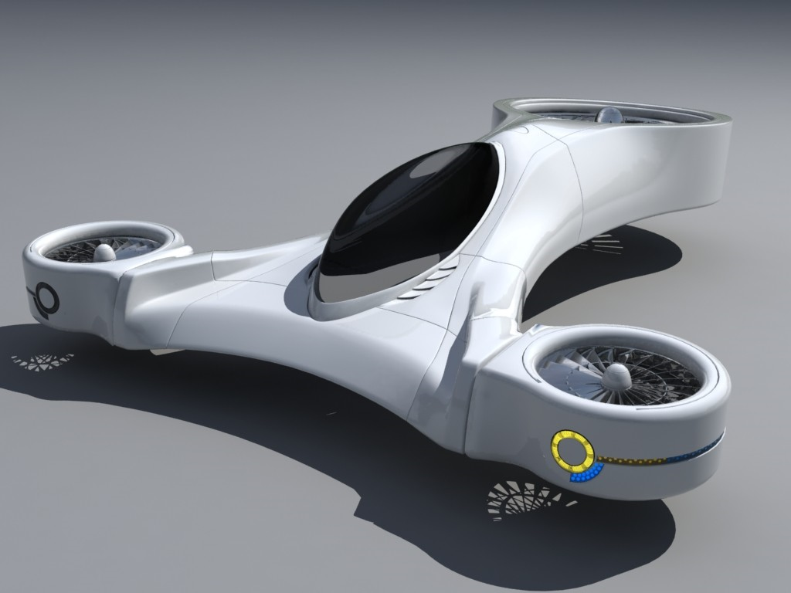

Contact Info:
MLQ Headquarters
7348 Garden Ave.
El Monte, Ca. 91754
Phone: (626) 932-8361
Email Address: MLQHQ7348@yahoo.com
*Note, this contact information is not real, it is for competition purposes only.
|
[Our Future Visions]
We were found in the early 21st Century in the age of ROBOTICs and revolutionary advancements of technology in all fields. The movement will support the growth of robotics by replacing the difficult task that many human needs to carry out. Robots and technologies created by Future Leaders in the Advancement of Technology (FLAT) will be used worldwide in aiding humans tasks such as: mining, toxic waste disposal, underwater exploration, space exploration, and rescue missions. Global issues like the excessive exposure to toxic chemicals will no longer be a threat because robots of the new age are now our primary source of detoxification and waste management.
The year is 2030; unacceptable carbon dioxide will longer be emitted from machines. Our next generation of machines requires only the power of the renewable resource from the sun. With an indistinguishable solar energy we are able to power robot to aid in getting the job done. The world we live in will be a thing of the past, for the future will hold advance technology and better machines to perform our tasks. Fossil fuel dependency has significantly decreased. Now with controled robot under us we can process our job with just the use of joy stick.
|  |
Helicar - the vehicle of the future.
http://listverse.com/wp-content/uploads/2008/01/flying-car-tm.jpg |
|
With the new helicar traveling across long distance in short amount of time it will be the thing of the future. Being able to eliminate fossil fuel and using hydrogen fuel cells or solar power to power the vehicle we achieve the unimaginable and bring you to new heights.
 |
Eco-Friendly Buildings- The house that power itself.
Regium Waterfront Future Architecture Design by Zaha Hadid |
|
Our house will have technology to eliminate the dangerous gas Radon. Building and industries will become the thing of the past. Now with eco-friendly buildings we can eliminate the inefficient windows and insulation that lose unacceptable amounts of thermal energy. We no longer have to invest our money towards generating enormous amounts of energy to regulate the temperature in our homes. With the installation of solar equipment, energy is created efficiently.
|